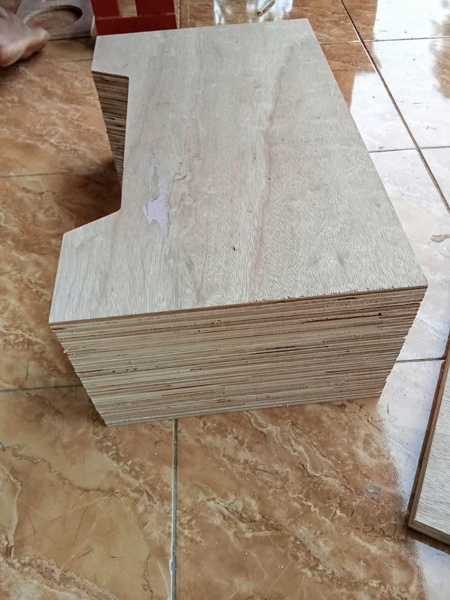
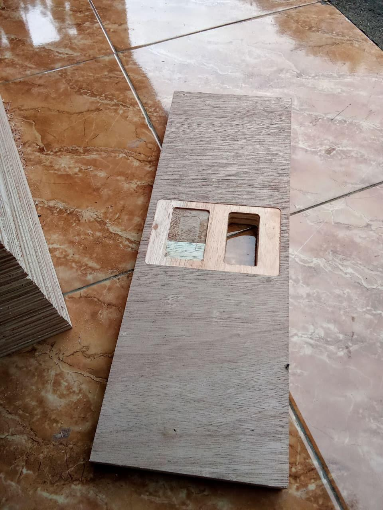
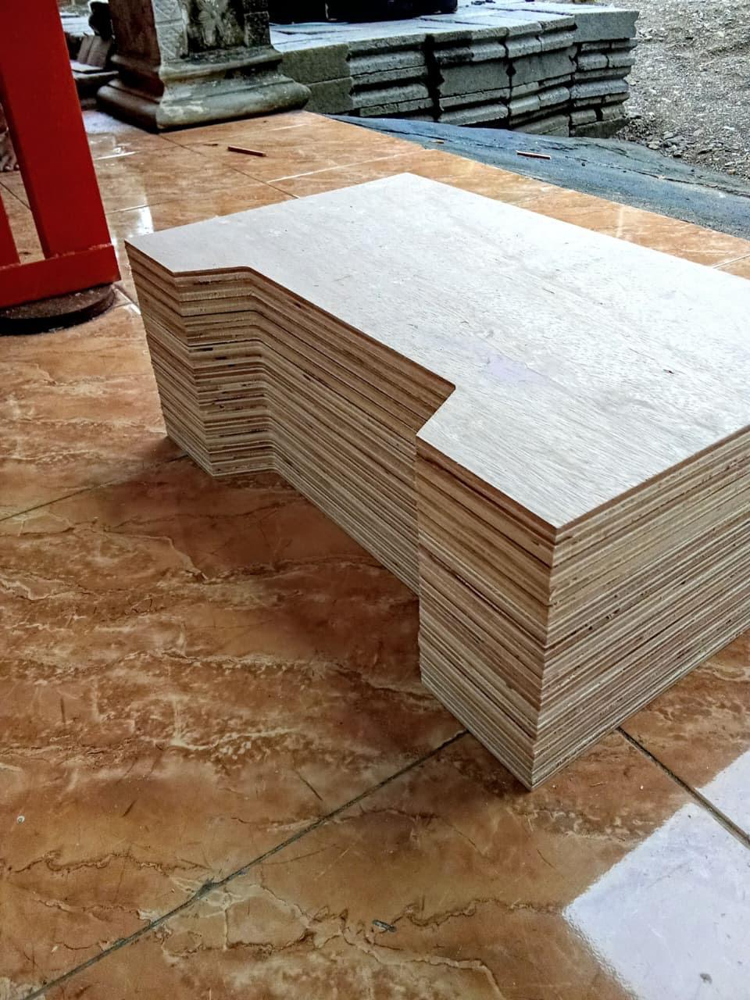
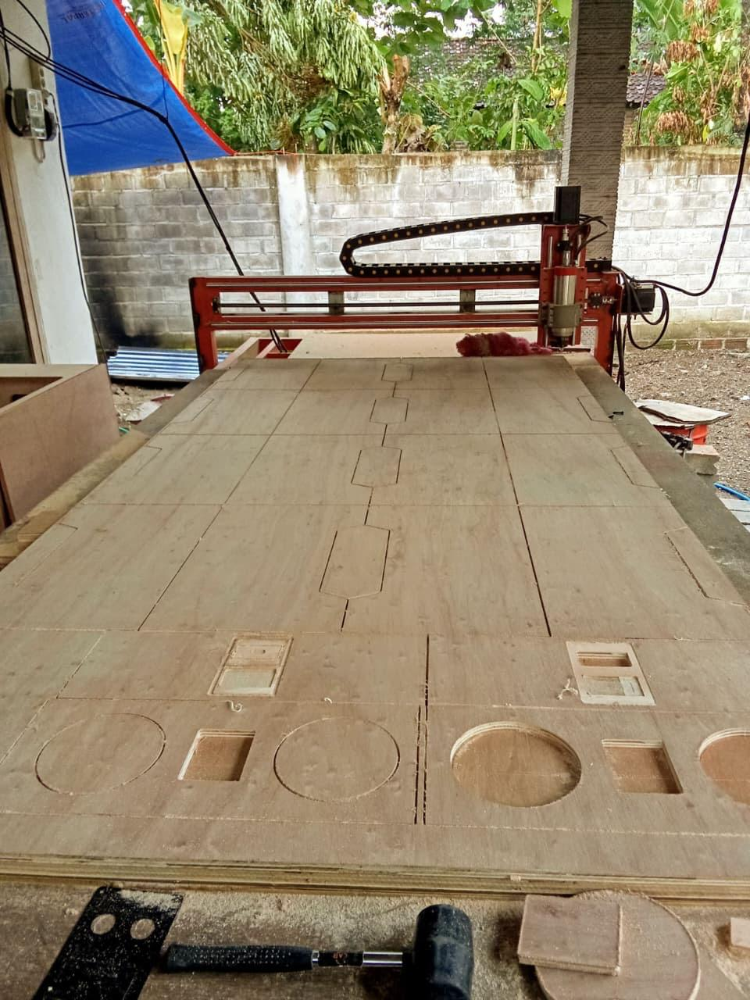

CNC Router adalah mesin pemotong otomatis yang digunakan untuk membuat berbagai bentuk dan desain dengan tingkat presisi tinggi. Mesin ini bekerja menggunakan sistem komputer untuk mengontrol pergerakan mata potong pada material seperti kayu, MDF, akrilik, dan multiplek.
Pada proses ini, CNC Router digunakan untuk membuat potongan box atau kotak dari bahan multiplek. Mesin melakukan pemotongan sesuai desain yang dibuat pada software sehingga hasil potongan menjadi rapi, presisi, dan cepat.
Foto-foto pada galeri merupakan hasil proses pemotongan box menggunakan CNC Router yang nantinya dapat digunakan untuk kebutuhan speaker, panel, maupun kerajinan lainnya.



